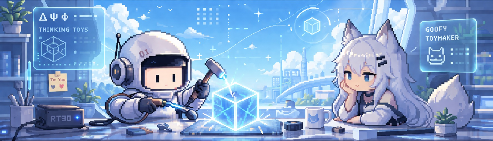

About
一個以發想為主體的個人紀錄系統。
A personal system for ongoing idea generation.
收錄大量未經驗證的概念與其衍生結構，並轉化為可供 AI 操作的思考玩具。
不具學術定位，
不作為理論或方法論使用，
也不是產品展示。
僅作為想法的持續生成與留存。
A collection of unverified concepts and improvised structures, turned into small "thinking toys" for AI interaction.
Not academic.
Not a formal theory.
Not a product.
Just a record of continuous exploration.